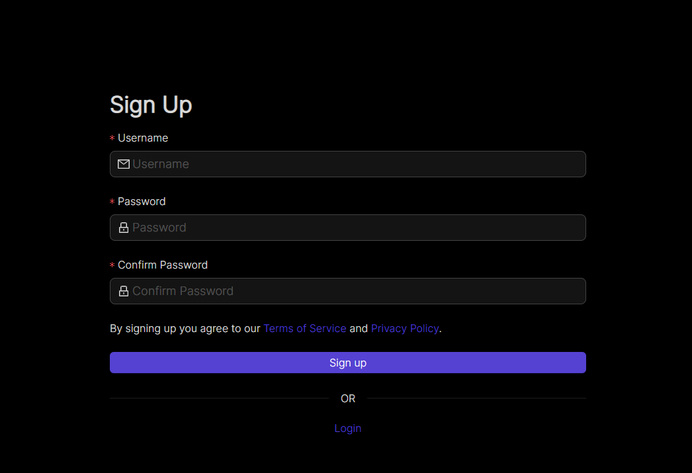
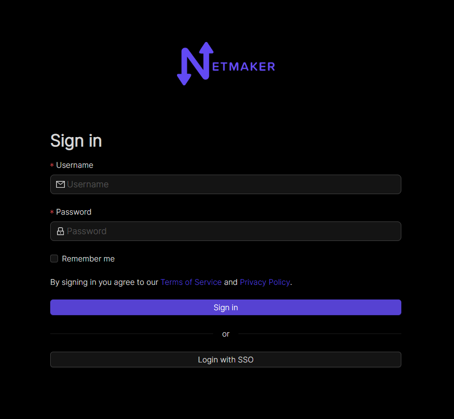

User Management
Superadmin Signup
When you start Netmaker for the first time, you will be prompted to create a superadmin account from the UI like below
{kind=link}
Input your username and a super memorable but strong password then click on the Sign up button. Once you’ve signed up, you can login to your Netmaker server with the account.

{kind=link}
Users in Netmaker Professional
Netmaker Professional offers advanced user management features. The super admin can create users with either a user or admin role. Only Admins can access the dashboard, the normal users can use remote access client to join the network through a gateway. Admins can add users and assign them to remote access gateways, which includes managing the user’s access to different remote access gateways.
Here is a breakdown of the different user types and their permissions:
User: Users do not have access to the Netmaker dashboard. They can only use the remote access client to connect to a gateway.
Admin: They can create and manage users, networks, and gateways. They cannot create/manage other admins
Super Admin: Super admins have full access to Netmaker. They can create and manage users, admins, networks, and gateways. They can also manage user and admin permissions.
Adding users
To add a user, go to the Users section and click the Add User button. Fill in the user’s details, including their name, password, and role.
As a super admin, you can add users with the role of admin or user.
As an admin, you can only add users with the role of user.

The credentials will need to be shared with the added user.
Attaching or removing user from a remote access gateway
To attach users to a remote access gateway or remove users from a gateway, you will need to have the gateway set up. Once the remote access gateway is set up, you will see an option to attach or remove users from the gateway’s dropdown menu on the table row.

You can click the button to either attach or remove a user

Using the Remote Access Client (RAC)
Once a user has been attached to a remote access gateway, they can connect to a network using the remote access client. To do this, they will first need to log in using the credentials that were provided to them. Social login is also supported.

After successful login you will be shown all the networks and gateways you have given access to, so now you will be able to connect/disconnect/refresh your connection to a gateway. Internet gateways are depicted with a globe icon. An internet gateway can be used to route all your traffic through the gateway, this is useful if you want to access the internet without exposing your public IP address. This behaves like a traditional VPN.

The remote access client also has the following options:
Refresh connection: This basically disconnects the current connection to the remote access gateway and then reconnects to it.
Reload clients: This reloads the client data on the page, which can be useful if the data has changed since the page was last loaded.

Reset: This resets all connections to remote access gateways across all Netmaker servers and networks known to the client. This can be useful if you end up with a bad wireguard or network interface configuration or are having trouble connecting to a gateway. you should only use this option if Refresh connection does not work.
Using Netmaker like a traditional VPN
Some remote access gateways, specifically internet gateways (depicted by globe icon) can route all your traffic through the them. This can be useful if you want to access the internet without exposing your public IP address. This behaves like a traditional VPN. Internet gateways is a Pro-only feature.
Controlling RAC user sessions
On pro servers/tenants, the duration of a non-admin user’s remote session can be controlled. This can be done by setting RAC_AUTO_DISABLE (to true) and JWT_VALIDITY_DURATION (to an integer in seconds) environment variables on the server.
With RAC_AUTO_DISABLE set to true, a non-admin user’s remote sessions will be disabled after the duration specified in JWT_VALIDITY_DURATION has elapsed. The user will have to relogin to enable their remote session again.
NOTE: The JWT_VALIDITY_DURATION environment variable also configures all the JWT token validity duration for all users, regardless of whether RAC_AUTO_DISABLE is set to true or not.
(Re)Starting the service/daemon process
On very few occasion, the RAC daemon may not be running and will need to be restarted manually. There are two ways to resolve this:
Restart the computer. The daemon starts automatically on boot so restarting the computer will start the daemon on next startup.
Manual restart. The exact procedure depends on your operating system.
Manual daemon restart on Windows
Open Task Manager.
Go to the “Services” tab.
Look for the “remote-client” service.
Right-click on the service and select “Restart” or “Start”.
Manual daemon restart on Linux
On Linux, RAC daemon relies on systemd to manage the service. You can restart the service using the following command:
sudo systemctl restart remote-client
Manual daemon restart on Mac
On Mac, RAC daemon relies on launchd to manage the service. You can restart the service using the following command:
sudo launchctl stop com.netmaker.remote-client
sudo launchctl start com.netmaker.remote-client
FAQs and Known Issues
Q: I am getting an error when trying to connect to a gateway.
A: Make sure that the gateway is running healthily and that you have access to it. Also try to “Refresh” and see if that fixes the issue. Otherwise “Reset” all connections and try again.
Q: Other WireGuard-based VPNs interfere with Netmaker RAC.
A: This is a known issue. If you have other WireGuard-based VPNs running on your machine, they may interfere with Netmaker RAC. You can try to disable them and see if that fixes the issue. Pro-tip: Netmaker Pro offers internet gateway functionality, so you can use it just as a traditional VPN. For more information, explore the Remote Access gateway feature.